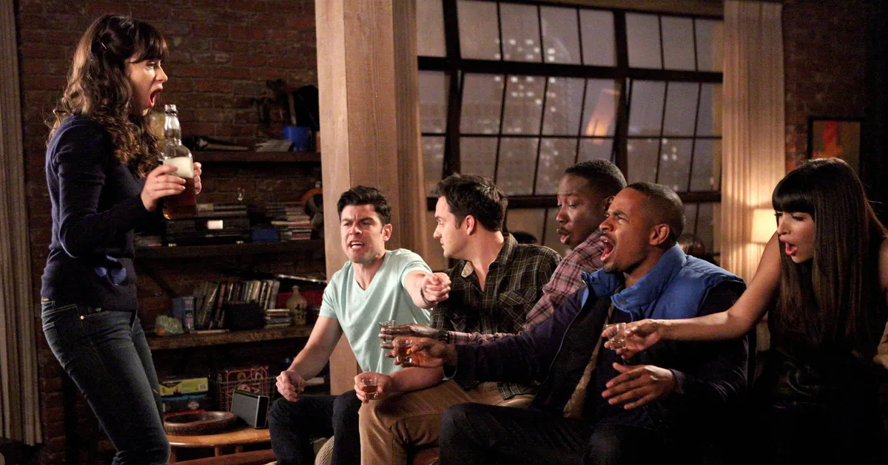
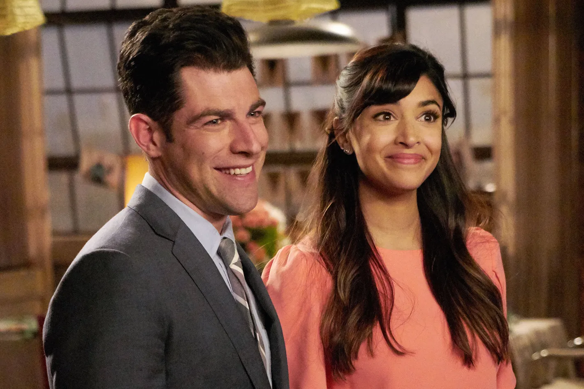
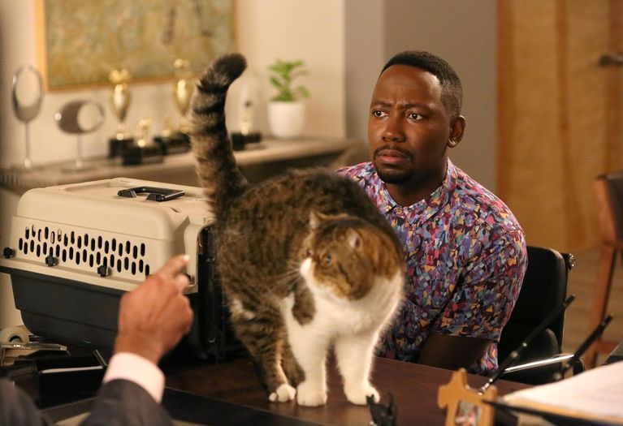
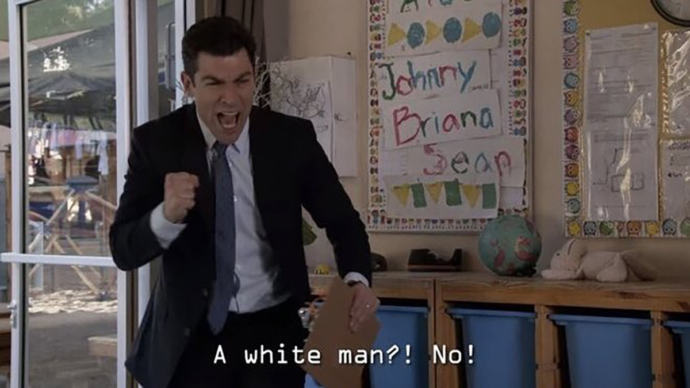

Characters
Jess
She is a bubbly young woman trying to find herself again after a shocking breakup with her boyfriend. She has been a teacher since 2006 and she loves to play the handbells. Jess enjoys crafting but doesn't have much time for it anymore.
Nicknames include: Jebecca, Rebecca Johnson, Two-Boobs Johnson, Tiger Boobs, Jess Jess, Ivy, Loft Troll, Dirty J, Dr Day My Toilet Sister, Giggle Bangs Rice Bowl, Katie, Yolanda Winston, Toilet Pants, Joey, Trebecca, PJ
Schmidt
Schmidt is a narcissistic, self-proclaimed "alpha male", who sees himself as being greater than he really is. His roommates all agree he's a douche and every time he does something douchey, he's forced to put a dollar in the douche jar. Over the series, this jar overflows with money. Schmidt is very annoying, as he not only has an unhealthy concern for his appearance but is also constantly bragging about his few and laughable excuses for accomplishments in life to his roommates, much to their annoyance.
As self-absorbed as Schmidt is, he is also a genuinely caring guy for others, helping out his friends such as Jess and CeCe, when they're in times of distress and is all around a good friend.
Winston
Oblivious and goofy, Winston is the sweet yet often dopey one in the apartment. Despite his occasional intellectual shortcomings, his roommates often turn to him for words of advice. His childlike qualities, such as the fact that he still believes in Santa Claus, make him an ideal companion for the cynical Nick and the aggressive Schmidt.
Nick
Nick is an apathetic, socially inept, extremely sarcastic, and hilarious bartender from Chicago who has a keen ability for reading people's emotions although he can't seem to express his own.
Cece
Reasonable, charming, and tough. The grounded and realistic Cece is always there to offer advice to Jess, the airy and childlike dreamer. Sometimes this advice might take the form of tough love, but there is no one else in Jess’s life who isn’t afraid to say, “Please don’t make me laugh at you."
Overview
New Girl is an American television sitcom created by Elizabeth Meriwether and produced by 20th Television for Fox that originally aired from September 20, 2011, to May 15, 2018. The series revolves around a kooky teacher, Jessica Day (Zooey Deschanel), after she moves into a Los Angeles loft with three men, Nick Miller (Jake Johnson), Winston Schmidt (Max Greenfield), and Winston Bishop (Lamorne Morris); their former roommate Coach (Damon Wayans Jr.) and Jess' best friend Cece Parekh (Hannah Simone) are also part of the series. The show combines comedy and drama elements as the characters, who are in their early thirties, deal with relationship issues and career choices.
The series follows the group's amusing interactions with each other as they become closer friends, and their romantic relationships. The show follows multiple relationships, including quirky Jess with cynical Nick and goofy Schmidt with beautiful Cece.
Best Quotes
"I brake for birds. I rock a lot of polka dots. I have touched glitter in the last 24 hours! And that doesn't mean I'm not smart and tough and strong." --Jess
"You gave me cookie I got you cookie, man." --Nick
"If I were off my rocker, would I take a weekly selfie with my cat?" --Winston
“Nick isn’t even a man. He’s some kind of man-boy, man-child hybrid. The other day I had to tell him not to pull a dog’s tail.” --Schmidt